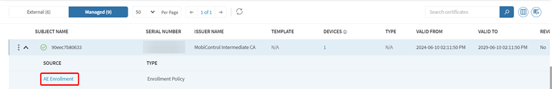

Using the Certificates Dashboard
The Certificates Dashboard in SOTI MobiControl offers a centralized view and management of all deployed certificates. It features interactive charts, detailed tables for static and dynamic certificates, advanced filtering, and bulk actions like renewal and revocation all in one place.
- A table containing the pertinent information about a customer's static and dynamic certificates.
- Customizable interactive charts visualizing data relevant to the renewal and status of the customer's certificates.
- The ability to filter certificates by key identifiers.
- Search capability for specific certificates.
Certificate Charts
View the Certificates Dashboard charts to gain insight into the certificates deployed across your device fleet. Use the charts to explore available options and configure or reposition them as needed.
Certificate Table
- External Certificates: Certificates do not have a template in SOTI MobiControl. Users may have uploaded them directly to SOTI MobiControl as a file or deleted their templates.
- Managed Certificates: Certificates generated through a SOTI MobiControl template, including device certificates issued from the SOTI MobiControl root certificate.
Filtering the Certificates Dashboard
Use the following methods to filter certificate data. Each numbered item in the image corresponds to a method described in the table below.
| Number | Description |
|---|---|
| 1 | Select a device group from the device group tree to filter the certificates displayed in the Certificates Dashboard table. |
| 2 | Use the Certificate Status drop-down list at the top of the dashboard to view certificates by status. Options include: All, Installed, Pending Installation, and Revoked by Certificate Authority (CA). |
| 3 | Use the filter card on the left side of the chart section to view specific certificate states, such as active, inactive, failed renewals, and devices at risk. |
| 4 | The Certificates Dashboard includes interactive charts and visual summaries that update dynamically based on selected filters. These charts provide a visual summary of certificate activity and status. |
Viewing Targeted Devices
The Certificates Dashboard displays the number of devices targeted by each certificate in the certificate table. This value appears as a clickable link. When selected, it opens a filtered device view that lists only the devices associated with that certificate. You can further refine the results using the search field for certificates.
Viewing Certificate Sources
Each certificate entry in the dashboard includes a drop-down menu beside its name. For managed certificates, this menu may contain a link to the source of the certificate. Selecting the link opens the source in a new browser tab, allowing quick access for review or configuration.

Viewing Certificate Templates
Each managed certificate in the dashboard includes a reference to its associated template. The Template column links to the certificate authority configuration that defines the template settings. Selecting the template name opens the certificate authority’s global settings page in a new tab, where you can review or modify the associated template details.
Performing Actions on Managed Certificates
For each managed certificate in the dashboard, you can access actions through the More menu icon or by right-clicking the certificate. Available actions include revoking or renewing the certificate. These operations support life-cycle management and help ensure that certificates remain valid and secure.